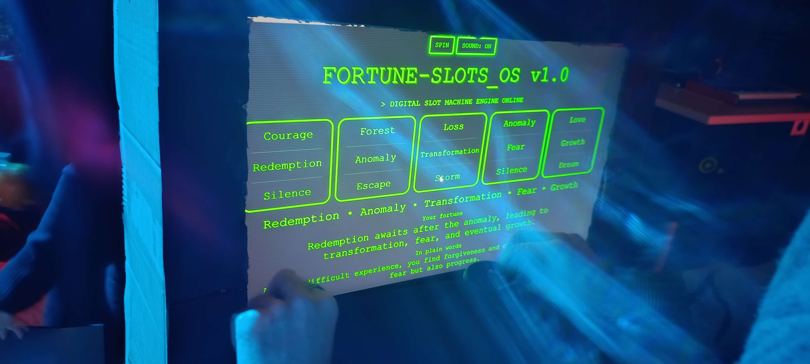
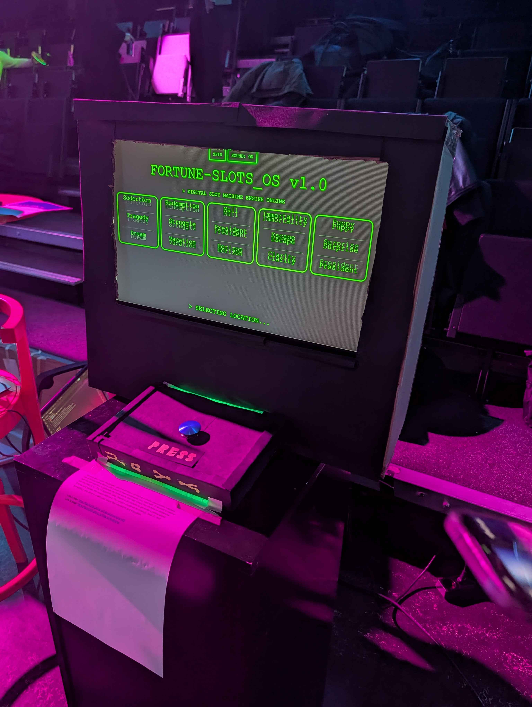
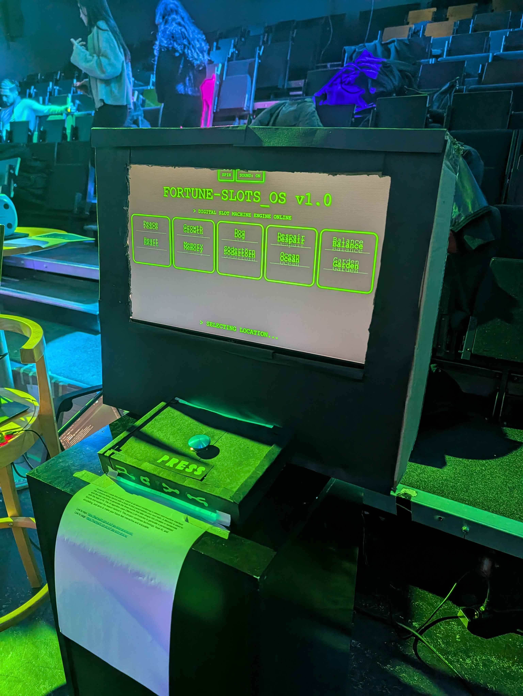
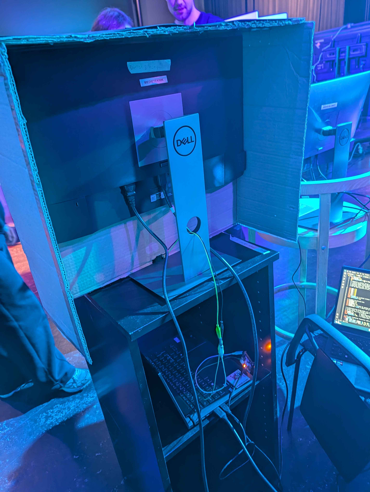
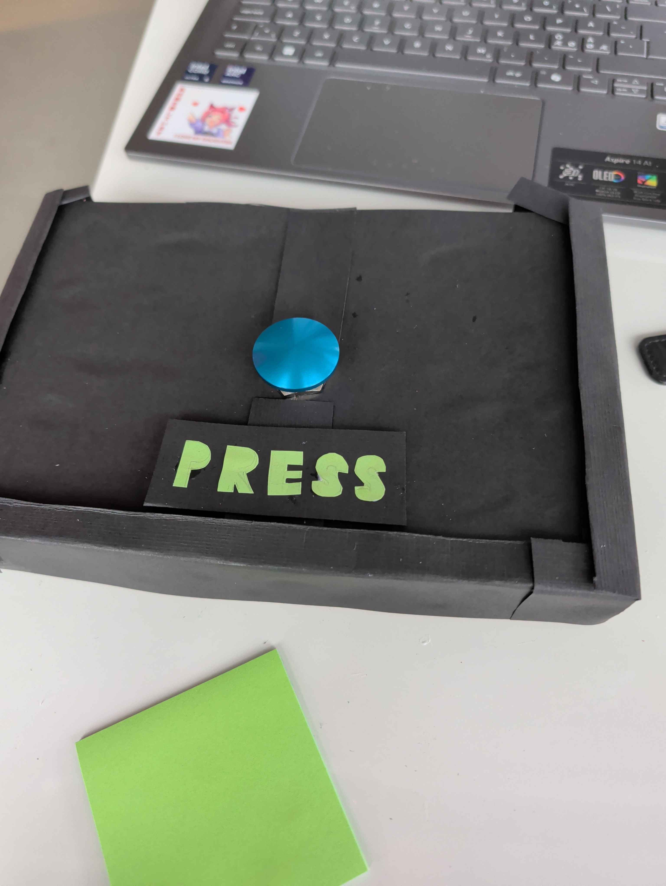

Daniel tytskiy & Hampus Edgren
[Me and Hampus project was a fortune roulette game controlled by a micro:bit and that gives responses with ollama]
Move your mouse over the field, or click to make a ripple.
My final project: The Algorithm of Fate
A CRT-style fortune slot machine controlled by a micro:bit. Each spin picks three words, and a local AI model writes a fortune and explains it.

This project is all about combining a classic slot-machine interface into a fortune-telling device with a local AI that personalizes your own fortune. A Microbit is used to spin the slot machine to generate the three words that later shape into a phrase or sentence with the help of AI. The AI algorithm uses Ollama LLM modules to generate a personalized fortune and explain the reason behind it. This project combines technology, local AI, and storytelling, and aims to make your future feel interactive and enjoyable.
Project gallery





Made with Hampus Edgren.
Code: [GitHub repository link]